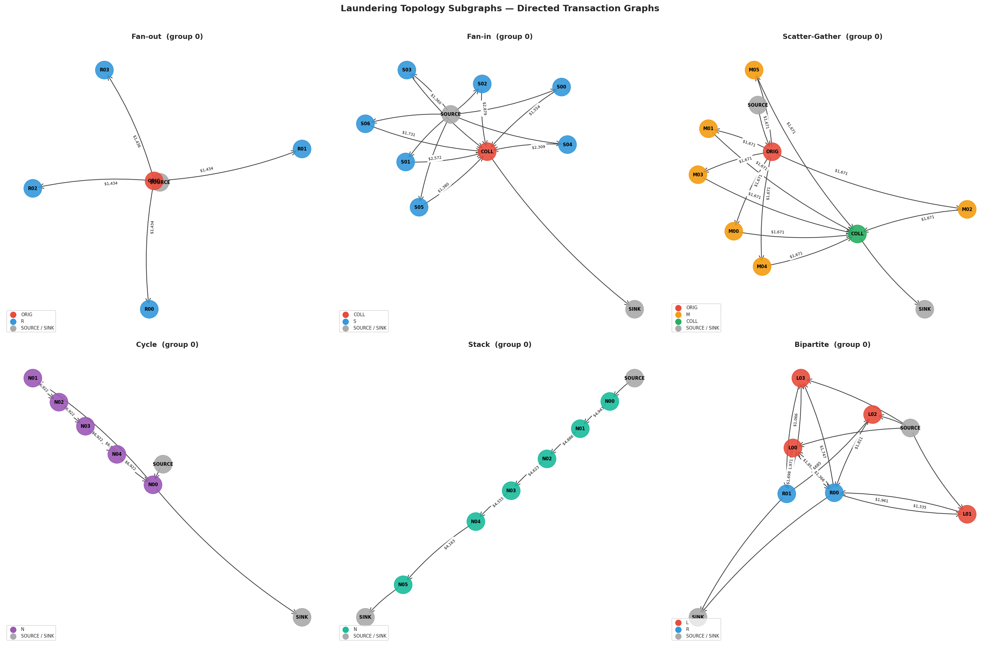
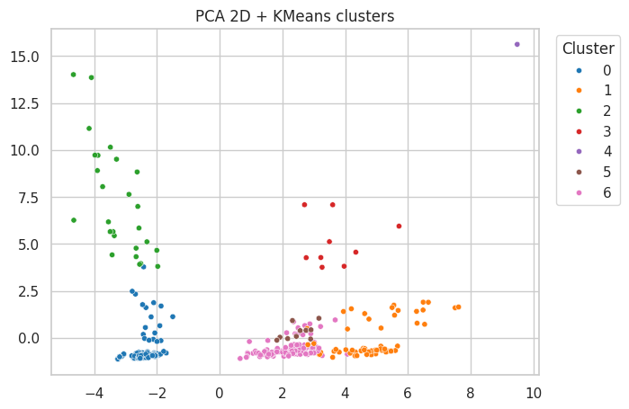
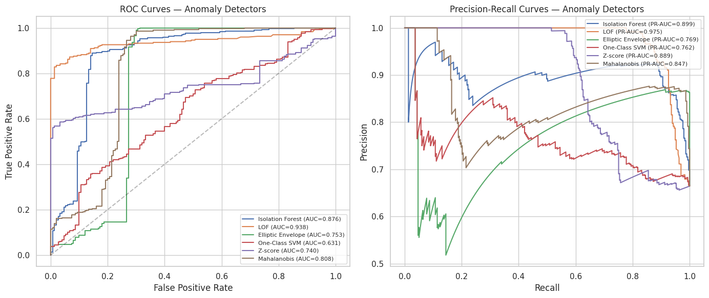

Anti-money laundering detection.
This anti-money laundering project starts with realistic synthetic transaction data, then uses a behavioral approach to study how accounts act over time. The results show that suspicious activity is not just about single unusual transactions, but about changes in timing, volume, and overall patterns that stand out from normal customer behavior. By approaching the problem in different ways, the project was able to identify the accounts most likely to need investigation and highlight where risk is concentrated. In practical terms, this means the method can support faster prioritisation of alerts and a more focused response to potentially suspicious activity.
What the project actually did
- Generated realistic transaction-level data for online gaming and payment activity.
- Created a structured account view that summarizes each account’s behavioral behavior.
- Built features such as transaction timing, session rhythm, amount volatility, incoming/outgoing flows, and activity volume.
- Grouped accounts into behavioral fingerprints to see whether suspicious users cluster together.
- Measured whether user behavior shifted over time and flagged accounts with sudden changes.
- Combined several anomaly detectors into a final risk score to improve detection quality.
Why this matters
In AML work, the biggest risks usually do not look like one single bad transaction. They look like a pattern: unusual timing, abnormal account activity, suspicious flow patterns, or a sudden shift in behavior.
Project journey
Data generation
Created synthetic records for normal players and suspicious laundering patterns to train and evaluate the pipeline.
Data design
Defined the transaction schema and account categories for a realistic online gaming and payment environment.
Feature engineering
Converted raw transactions into account-level behavioral signals covering timing, volatility, sessions, and money flow.
Behavioral fingerprinting
Clustered engineered features to reveal account behavior archetypes and separate suspicious usage patterns.
Anomaly detection
Tested multiple detection methods to identify suspicious accounts and quantify changes over time.
Phase 1 detail: data generation
How the simulation was built
- Built transaction behavior using simulation functions for deposits, betting, withdrawals, and account-to-account transfers.
- Created two groups of synthetic users: normal profiles and suspicious AML red-flag profiles.
- Included realistic context fields: bank routing, currencies, payment format, session timeline, device, and location.
- Simulated both individual behavior and coordinated graph topologies to mirror known laundering structures in prior AML research.
Normal player profiles (A-C)
Type A: Casual low bettor
Small bets, slow rhythm, steady gameplay.
Type B: Medium stable bettor
Consistent bet ranges and longer sessions.
Type C: Hot/cold player
Variance swings and occasional loss-chasing.
Suspicious player simulations
Structuring
Many small deposits near threshold levels.
Rapid in/out
Quick deposits and fast withdrawals with minimal play.
Volatility spike
Sudden high-value bet spikes after baseline play.
Coordinated accounts
Shared behavior across linked accounts and devices.
Bot-like behavior
Highly regular and machine-like action intervals.
Crypto abuse pattern
Anonymous-style funding and laundering-through-loss behavior.

Phase 2 detail: data design
Methodology
Schema layers included
Transaction layer
Transaction id, timestamp, paid/received amounts, payment format, and action type.
Routing layer
from_account/to_account and from_bank/to_bank for money-flow path analysis.
Behavior layer
Session, timing gaps, device, location, and gameplay context to capture behavior signals.
Topology layer
Graph pattern tagging to represent known suspicious transfer structures from AML research.
Risk label layer
money_launderer, player_label, and is_suspicious for evaluation and explainability.
Feature-ready layer
Data organized to be transformed into account-level behavior features in later phases.
Player and risk taxonomy design
This taxonomy was intentionally designed to cover both routine gaming behavior and high-risk AML scenarios, so later model phases can learn separation patterns and operationally meaningful risk scores.
Phase 3 detail: feature engineering
Phase 3 transformed transaction logs into one account-level feature table used by all downstream modeling. The output dataset contains 33 columns per account (ID + 31 behavior features + 1 AML label), with features grouped into four behavior families.
Feature families (clear category view)
Rhythm features
7 features- Total account event count and active day count
- Average time gap between events and gap variability
- Night-time activity share and weekend activity share
- Behavior burstiness index
Volatility features
9 features- Average, median, and standard deviation of transaction amount
- Maximum amount and upper/lower amount percentiles
- Amount consistency ratio
- Percentile spread and max-to-median amount ratio
Session features
5 features- Number of distinct sessions
- Average session duration
- Typical and peak events per session
- Average counterparties per session
Money-flow features
10 features- Total incoming and outgoing value with event counts
- Distinct incoming and outgoing counterparties
- Net money flow and outflow-to-inflow ratio
- Outgoing activity share and transfer behavior share
Phase 4 detail: behavioral fingerprinting
How the fingerprinting worked
After the feature engineering step, each account was described by a set of behavioral signals such as activity rhythm, amount volatility, session patterns, and money-flow behavior. Instead of looking at one transaction at a time, the model grouped each account using its overall behavior profile, so it could see whether an account behaved more like a normal user or like a suspicious pattern.
Clustering models tested
Best performer: K-means clustering
- Used after reducing the behavior space into a simpler view with PCA.
- Produced the clearest separation between normal accounts and suspicious groups.
- Best result came with 7 clusters and a silhouette score of about 0.46, which indicates a strong balance between separation and compactness.
- Several clusters were heavily enriched with suspicious accounts, while the normal patterns stayed grouped separately.
Other models compared
- Gaussian Mixture Model: a softer clustering approach that handled overlap more gently, but it produced weaker separation than K-means.
- UMAP + HDBSCAN: a nonlinear approach that found dense groups and flagged outliers; it was useful for identifying unusual edge cases and noisy accounts.
What the PCA cluster plot is showing
This plot is a simplified map of account behavior. Each point is one account, and accounts with similar transaction habits appear closer together. The clustering algorithm is able to group together accounts that behave in similar ways, which helps show where normal activity sits and where suspicious patterns stand out.
In practical terms, the algorithm is separating different suspicious behaviors by their pattern, such as accounts with highly irregular timing, unusual money movement, or very bursty activity. That makes it easier to distinguish one behavior archetype from another without looking at raw transaction logs line by line.

Task 2: shift detection and behavior change over time
The second part of this phase looked at whether an account’s behavior stayed consistent over time or changed meaningfully from one month to the next. This is important because suspicious activity often does not appear as one big event; it can emerge as a gradual or sudden shift in normal behavior.
The strongest shift signals were in average timing gap, total activity volume, timing variability, and outgoing activity volume. This means the clearest changes over time were in how often accounts acted and how irregular their activity became.
Key findings
Behavioral separation was strong
How to read silhouette score
Silhouette is a clustering quality metric from -1 to 1. Values near 0.5 usually mean reasonably distinct behavior groups, while near 0 means overlap.
The PCA + KMeans approach created the clearest behavioral clusters, suggesting suspicious activity was clustered into recognizable patterns rather than being random noise.
Drift was concentrated in timing and volume
How to read PSI values
PSI measures how much the distribution of account behavior changed between time periods. Larger values indicate stronger drift, which means the account’s activity is moving away from its normal pattern and deserves closer review.
The strongest distribution changes were in how often transactions occurred and how irregular the timing became. In plain terms, suspicious accounts were not just transacting more often — they were acting differently, which is a strong sign of behavioral drift over time.
These four drift patterns point to a broader pattern: account behavior started shifting in rhythm, speed, and volume, which makes the activity look less like normal customer behavior and more like an operational or laundering pattern.
Phase 5 detail: anomaly detection
What this phase did
Phase 5 focused on turning behavioral patterns into practical detection scores. The work was split into two model-development tasks: one for broad anomaly detectors and one for neural-network reconstruction models. The objective was to identify which methods best separate suspicious accounts from normal accounts in a way that is reliable for business monitoring.
Detection workflow (interactive view)
Click each step to see what happened, why it mattered, and what output moved to the next stage.
1) Prepare behavior features
Transaction history was converted into comparable account-level behavior signals, so each account could be measured on timing, volatility, sessions, and flow.
Business outcome: a consistent input dataset for fair account-to-account risk comparison.
Task 1: anomaly model comparison
- Tested multiple detectors that each look for unusual behavior in a different way.
- Included Isolation Forest, Local Outlier Factor, Elliptic Envelope, One-Class SVM, statistical outlier scoring, and Mahalanobis distance.
- Compared outputs using quality metrics that measure separation and precision of suspicious-account ranking.
- Built an ensemble score to combine strengths from multiple models.
Task 2: reconstruction-based detection
- Built a dense autoencoder to learn normal account behavior and flag accounts with high reconstruction error.
- Built an LSTM autoencoder to learn sequence behavior over time for accounts with enough transaction history.
- Combined these outputs with Task 1 scores into a unified risk score.
- Reported numeric outcomes directly for this task because no plot is used here.
Task 1 visual: model performance comparison
This chart compares how well each Task 1 model separates suspicious accounts from normal accounts. Higher scores indicate better practical detection quality.

Task 2 numeric results (no plot)
| Model | ROC-AUC | PR-AUC | Business interpretation |
|---|---|---|---|
| Dense Autoencoder | 0.903 | 0.938 | Strong detection from behavior reconstruction, useful as a robust secondary signal. |
| LSTM Autoencoder | 0.625 | 0.350 | Weaker in this run due to limited sequence coverage, but still informative for temporal edge cases. |
| Combined risk score | 0.966 | 0.982 | Best final signal for prioritizing investigations with high confidence. |
Note on Combined Risk Score: In this implementation, the combined risk score is a consensus average of the core Task 1 detector scores (Isolation Forest, Local Outlier Factor, One-Class SVM, statistical outlier score, and Mahalanobis distance), with the LSTM autoencoder score included when sequence data is available for that account. Higher values indicate higher AML risk priority.
How to read ROC-AUC and PR-AUC
ROC-AUC measures ranking quality across all thresholds. PR-AUC emphasizes how well high-risk accounts are captured with fewer false alarms; this is usually more actionable for investigation teams.
Local Outlier Factor
Top single-model separation in Task 1, indicating strong ability to catch unusual local behavior patterns.
Combined risk score
The blended score performed best overall and is the most business-ready option for account triage.
Better prioritization
Investigators can focus first on top-ranked accounts, where true suspicious cases are most concentrated.
High practical value
Detection quality is strong enough to support risk monitoring and faster review decisions in operations.
Executive summary
This project proved that suspicious AML patterns can be modeled from account behavior, not just from transaction amounts or single flags. Behavioral timing, transaction rhythm, and account flow changed in ways that differentiated risky activity from normal usage. The final model produced highly credible risk scores and offered a practical pathway for monitoring unusual accounts in a real operational setting.
Simple glossary
- AUC: a measure of how well the model separates suspicious activity from normal activity. Higher is better.
- Drift: a change in behavior over time, such as accounts suddenly becoming much more active or less regular.
- Behavior fingerprint: the summary of how an account typically behaves, used to compare it with other accounts.
- Anomaly score: a number showing how unusual an account looks relative to normal patterns.